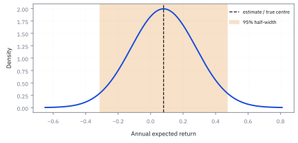
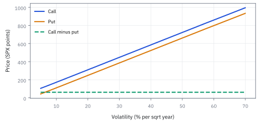

14.4 Confidence Intervals
รายงานช่วงที่ข้อมูลยังรองรับ แทนการฟันธงด้วยเลขเดียว
ข้อมูลหนึ่งปีให้ค่าเฉลี่ยหนึ่งตัว; ควรพูดว่าความจริงคือเลขนั้นพอดี หรือควรบอกช่วงที่ข้อมูลยังเข้ากันได้?
เฉลย: ควรบอกเป็นช่วง ไม่ใช่ยึดเลขจุดเดียว. confidence interval เปลี่ยนคำอวดอ้างให้เป็นความไม่แน่นอนที่ตรวจได้; ช่วงกว้างไม่ได้แปลว่าแย่ แต่มันบอกว่าข้อมูลยังพูดเบา.
ศัพท์ที่ใช้ในหัวข้อนี้
- confidence interval (CI)
- ช่วงตัวเลขที่คำนวณจากข้อมูล ใช้บอกว่าค่าจริงน่าจะอยู่ในกรอบไหน พร้อมระบุว่าวิธีนี้จะครอบค่าจริงได้บ่อยแค่ไหนถ้าทำซ้ำหลายครั้ง ไว้กันไม่ให้เชื่อค่าเฉลี่ยจากตัวอย่างเดียวมากเกินไป
- confidence level
-
คืออะไร: ตัวเลขที่เรา *เลือกเอง* ก่อนคำนวณ เช่น 95 เปอร์เซ็นต์
ใช้ทำอะไร: ใช้กำหนดว่าช่วงที่คำนวณออกมาจะกว้างแค่ไหน
ทำไมถึงเป็นการเลือก: เพราะมันคือการตกลงกับตัวเองว่ายอมพลาดได้บ่อยแค่ไหน ไม่ใช่ข้อเท็จจริงที่ค้นพบจากข้อมูล
- coverage
-
คืออะไร: สัดส่วนจริงที่ช่วงซึ่งคำนวณด้วยวิธีนี้ ครอบค่าที่แท้จริงไว้ได้
ใช้ทำอะไร: ใช้ตรวจว่าวิธีที่ใช้ทำได้ตามที่สัญญาไว้จริงหรือไม่
ทำไมต้องแยกจากตัวบน: เพราะตัวบนคือสิ่งที่เราขอ ส่วนตัวนี้คือสิ่งที่ได้จริง และสองอย่างนี้ไม่ตรงกันเมื่อข้อสมมติของวิธีไม่เป็นจริง
- critical value
-
คืออะไร: ตัวเลขที่เอาไปคูณกับความคลาดเคลื่อน เพื่อกำหนดความกว้างของช่วง
ใช้ทำอะไร: เป็นตัวเลขที่เปิดจากตาราง เช่น 1.96 สำหรับระดับ 95 เปอร์เซ็นต์
ทำไมถึงเป็น 1.96: เพราะพื้นที่ใต้ระฆังคว่ำมาตรฐานระหว่างลบค่านี้ถึงบวกค่านี้ เท่ากับ 95 เปอร์เซ็นต์พอดี ไม่ได้เป็นเลขที่ใครตั้งขึ้น
- quantile
-
คืออะไร: ค่าที่แบ่งการกระจายตามสัดส่วนที่กำหนด
ใช้ทำอะไร: เป็นวิธีหาตัวเลขข้างบนสำหรับระดับความเชื่อมั่นใด ๆ ที่เราเลือก
ทำไมต้องรู้ว่าเป็นเรื่องเดียวกัน: เพราะเลข 1.96 ไม่ใช่เลขวิเศษ มันคือตำแหน่งบนเส้นการกระจาย และเปลี่ยนไปทันทีถ้าใช้การกระจายอื่น
- Student t distribution
- Student t distribution มีหางหนากว่า normal เมื่อ standard deviation ต้องประมาณจาก sample เล็ก ใช้แทน normal critical value เพื่อไม่ทำช่วงแคบเกินจริง
- degrees of freedom
- degrees of freedom คือจำนวนข้อมูลอิสระที่เหลือหลัง fit parameter ใช้เลือก Student t critical value โดย sample mean ใช้ $n-1$
สัญลักษณ์ที่ใช้ในหัวข้อนี้
| สัญลักษณ์ | ความหมาย | หน่วย |
|---|---|---|
| $\hat\mu$ | ค่าเฉลี่ยที่คำนวณได้จากข้อมูล เป็นจุดกึ่งกลางของช่วงที่จะสร้าง | decimal/year |
| $\mu$ | ค่าจริงที่ช่วงนั้นพยายามครอบเอาไว้ | decimal/year |
| $\hat\sigma$ | ความกว้างที่ประมาณจากข้อมูล ใช้กำหนดว่าช่วงต้องกว้างเท่าไร | decimal/year |
| $n$ | จำนวนข้อมูลที่ใช้ | count |
| $T$ | ความยาวของช่วงข้อมูลเป็นปี | years |
| $\alpha$ | สัดส่วนที่ยอมให้ช่วงพลาด ถ้าเลือก 0.05 ก็ได้ความเชื่อมั่น 95 เปอร์เซ็นต์ | ไม่มีหน่วย |
| $z_{1-\alpha/2},t_{1-\alpha/2,n-1}$ | normal และ Student t critical values สำหรับช่วงสองด้าน | ไม่มีหน่วย |
| $L,U$ | ขอบล่างและขอบบนของ confidence interval | decimal/year |
ที่มาที่ไป: รายงานเป็นช่วง แทนการฟันธงด้วยเลขเดียว
Jerzy Neyman เสนอกรอบคิดนี้ในปี 1937 เพื่อแก้ปัญหาที่ว่า การรายงานค่าประมาณเป็นตัวเลขเดียว ทำให้ผู้อ่านเข้าใจผิดว่าเรารู้แน่นอน
แนวคิดคือแทนที่จะบอกว่าคำตอบคือเท่านี้ ให้บอกช่วงที่ข้อมูลยังรองรับ พร้อมระบุว่าวิธีสร้างช่วงนี้ ครอบคลุมค่าจริงบ่อยแค่ไหนถ้าทำซ้ำหลาย ๆ ครั้ง
ความหมายที่แท้จริงนั้นละเอียดอ่อนกว่าที่คนส่วนใหญ่เข้าใจ และเป็นจุดที่ตีความผิดกันบ่อยมาก
ในงานการเงินเรื่องนี้สำคัญเป็นพิเศษ เพราะ confidence interval ของ Sharpe ratio กว้างกว่าที่ทุกคนคาด และการเห็นความกว้างนั้นเปลี่ยนวิธีคุยกับผู้ลงทุนไปเลย
ทำไมต้องเป็นช่วง — ปัญหาที่ Neyman แก้
ก่อนปี 1937 นักสถิติรายงานค่าประมาณเป็นตัวเลขเดียว แล้วบอกว่า "น่าจะอยู่แถว ๆ นี้" โดยไม่มีกรอบให้ตรวจสอบ Jerzy Neyman ตั้งคำถามง่าย ๆ ว่า: ถ้าเราทำ procedure เดิมซ้ำหลายรอบกับ sample ใหม่ทุกครั้ง จะมีวิธีสร้าง interval ที่ครอบค่าจริงได้ตามสัดส่วนที่กำหนดล่วงหน้าไหม?
คำตอบของเขาคือ confidence interval — ช่วงที่คำนวณจาก sample โดยมีคุณสมบัติว่าถ้าทำซ้ำเป็นร้อยเป็นพันรอบ สัดส่วนของรอบที่ช่วงครอบค่าจริงจะเข้าใกล้ระดับที่ตั้งไว้ เช่น 95%
สิ่งที่ Neyman ทำราว ๆ ช่วง 1930s เปลี่ยนการรายงานจากคำอวดอ้าง เป็นข้อความที่ตรวจซ้ำได้ ก่อนหน้านั้นนักสถิติใช้ Bayesian credible interval ซึ่งต้องกำหนด prior distribution ของ parameter Neyman ต้องการวิธีที่ไม่พึ่ง prior เลย ให้ข้อมูลพูดเอง — นั่นคือ frequentist confidence interval
ในโลกการเงิน interval บอกว่าข้อมูลสั้น ๆ ยังพูดเบาแค่ไหน กองทุนที่โชว์ค่าเฉลี่ย 8% ต่อปี โดยไม่บอก interval กำลังซ่อนความไม่แน่นอนไว้ใต้พรม
Worked Example — โจทย์และสิ่งที่ให้มา
โจทย์ให้อะไรมาบ้าง: ใน frequentist confidence interval, parameter ถือว่าคงที่ แต่ช่วงที่คำนวณจาก sample จะเปลี่ยนไปเมื่อเก็บ sample ใหม่. ถ้าทำ experiment ซ้ำจำนวนมาก วิธีสร้างช่วง 95% จะครอบ parameter จริงประมาณ 95% ของครั้งนั้น; ไม่ได้แปลว่าช่วงเส้นเดียวมีโอกาส 95% ที่จะครอบ parameter. การพูดแบบหลังต้องระบุ prior และใช้ Bayesian model
สำหรับ investment committee ให้ใช้ interval เป็นสัญญาณตรวจ bug และ data quality: รายงาน estimand, horizon, method และ dependence พร้อมกัน
บันไดสู่สูตร: จาก CLT ถึง confidence interval ในหกบรรทัด
ทุกบรรทัดทำได้ด้วย algebra ของอสมการ ไม่มีเวทมนตร์ CLT เป็นจุดเริ่ม quantile เป็นจุดตัด การจัดรูปเป็นจุดจบ — interval ตกออกมาเอง
เริ่มจากของที่มีอยู่แล้ว: Central Limit Theorem (CLT) บอกว่าค่าเฉลี่ยของ sample ลบค่าจริงแล้วส่วนด้วย standard error จะแจกแจงใกล้ standard normal เมื่อ $n$ ใหญ่พอ
บรรทัดที่สามเอา quantile ของ standard normal มาตัดหาง ถ้าอยากให้ตรงกลางเป็น 95% ก็ตัดหางข้างละ 2.5% จุดตัดหางคือ $z_{0.975}=1.96$ ซึ่งอ่านจากตาราง ไม่ได้ถูกเลือก
จังหวะที่คนสะดุดคือบรรทัดที่ห้า: กลับเครื่องหมายไม่เท่ากัน ทำให้ $\mu$ เข้ามาอยู่ตรงกลางแทน ตอนนี้ช่วงเป็น function ของ sample ไม่ใช่ function ของ parameter อีกต่อไป
ผลคือ interval ที่ครอบ $\mu$ ด้วยความน่าจะเป็น $1-\alpha$ ถ้าข้อมูลเป็น iid จริง half-width ลดตาม $1/\sqrt n$ ข้อมูลมากช่วงแคบ ข้อมูลน้อยช่วงกว้าง
ขั้นที่ 1 — ลองด้วยมือ: 1.96 มาจากไหน และช่วงกว้างเท่าไร
ก่อนสูตร ลองอ่านเลข 1.96 จากตารางด้วยตัวเอง แล้วคูณกับ standard error ของโจทย์
เปิดตารางระฆังคว่ำมาตรฐาน (หัวข้อ 1.9): พื้นที่ทางซ้ายของ 1.96 คือ 0.975 จึงเหลือหางขวา 2.5% และหางซ้ายอีก 2.5% ตรงกลางจึงเป็น 95% พอดี เลข 1.96 ไม่ได้ถูกเลือก มันถูก *อ่าน* ออกมาจากตาราง
อยากได้ 90% ก็อ่านที่ 0.95 ได้ 1.645 อยากได้ 99% ก็อ่านที่ 0.995 ได้ 2.576 ยิ่งอยากมั่นใจ ช่วงยิ่งกว้าง
กับข้อมูลหนึ่งปีที่ volatility 20% ค่าเฉลี่ยมี standard error 20% ช่วงจึงกว้างข้างละ 39.2 จุด ครอบตั้งแต่ −31.2% ถึง 47.2% ตัวเลข 8% อยู่ในนั้นแต่ศูนย์ก็อยู่ในนั้น และ 40% ก็อยู่ ข้อมูลหนึ่งปียังพูดเบามาก
ทำไมต้อง 1.96 — ไม่ใช่ 2 หรือ 1.5?
1.96 ไม่ได้ถูกเลือก มันถูกอ่านออกมาจากตาราง standard normal ถามว่า "ตรงกลางต้องกว้างเท่าไรถึงจะครอบ 95% ของพื้นที่?" คำตอบคือจาก -1.96 ถึง 1.96 พอดี
ทำไมไม่ปัด 2? ได้ แต่ได้ 95.45% ไม่ใช่ 95% ถ้าคุณรายงานให้ committee ที่กำหนด coverage 95% ไว้ล่วงหน้า 2 ก็ผิด spec ไปนิดหน่อย ในทางปฏิบัติหลายคนใช้ 2 เป็น rule of thumb และมันก็ใกล้พอ
อยากได้ 90%? อ่านที่ 0.95 ได้ 1.645 อยากได้ 99%? อ่านที่ 0.995 ได้ 2.576 ยิ่งอยากมั่นใจมาก ช่วงยิ่งกว้าง ช่วง 99% กว้างกว่า 95% ราว 31%
ข้อผิดพลาดที่พบบ่อย: เผลอตอบว่า 1.96 คือ 2 standard deviations ไม่ใช่ — มันคือ 1.96 standard errors ซึ่งเท่ากับ $\sigma/\sqrt n$ ไม่ใช่ $\sigma$ standard deviation กับ standard error คนละตัว อันแรกวัดการกระจายของ data อันหลังวัดการกระจายของค่าเฉลี่ย
ขั้นที่ 2 — นิยามของconfidence interval เมื่อความกว้างที่ประมาณมาเชื่อถือได้
บรรทัดนี้เป็น นิยาม ของช่วงที่เราเลือกรายงาน ไม่ใช่ผลที่พิสูจน์ มันสร้างจากสองอย่างที่มีอยู่แล้ว คือความกว้างของค่าเฉลี่ยจากหัวข้อ 14.1 กับรูประฆังของค่าเฉลี่ยจากหัวข้อ 14.2 แล้วเลือกระยะ 1.96 เท่าเพื่อให้ครอบคลุม 95% ข้อควรระวัง: ช่วงนี้ใช้ได้เมื่อข้อมูลมากพอจนความกว้างที่ประมาณมาใกล้ของจริง ถ้ามีข้อมูลไม่กี่ตัว ความไม่แน่นอนของความกว้างเองต้องถูกนับด้วย ซึ่งคือขั้นถัดไป
สำหรับ sample ใหญ่และ iid approximation, $z_{0.975}=1.96$ ให้ช่วง nominal 95%; ทุกพจน์ต้องเป็น mean ต่อ horizon เดียวกัน
ใช้เมื่อไร: เมื่อรู้ $\sigma$ จริง หรือมีข้อมูลมากพอ (หลายสิบตัวขึ้นไป) จน $\hat\sigma$ ใกล้ $\sigma$ ถ้าข้อมูลมีไม่กี่ตัว ความไม่แน่นอนของ $\hat\sigma$ เองต้องถูกนับด้วย ซึ่งคือขั้นถัดไป
ทำไม standard error เป็น $\sigma/\sqrt n$ — สร้างจากศูนย์
สมมติฐานที่ซ่อนอยู่คือ independence ของ returns แต่ละปี ถ้า returns มี autocorrelation บวก cross-terms ไม่เป็นศูนย์ standard error จะใหญ่กว่านี้ ดังที่หัวข้อ 14.5 จะแสดง
ค่าเฉลี่ยคือผลบวกส่วนด้วย $n$ variance ของผลบวกของตัวแปรที่ไม่เกี่ยวกัน เท่ากับผลบวกของ variance ของแต่ละตัว เพราะ covariance ทุกคู่เป็นศูนย์ นี่คือจุดที่สมมติฐาน iid ทำงาน
ส่วนด้วย $n^2$ เพราะค่าเฉลี่ยมี $1/n$ คูณอยู่ข้างหน้า $n$ ตัว ตัวละ $\sigma^2$ บวกกันได้ $n\sigma^2$ ส่วนด้วย $n^2$ เหลือ $\sigma^2/n$ ถอดรากได้ $\sigma/\sqrt n$
ข้อมูลหนึ่งปีที่ volatility 20% standard error ของค่าเฉลี่ยคือ 20% เต็ม ๆ สี่ปีลดเหลือ 10% ยี่สิบห้าปีเหลือ 4% ลดตามรากที่สองของจำนวนปี ไม่ใช่จำนวนปีตรง ๆ
แล้วเอาไปใช้ทำอะไรได้จริงบ้าง
การรายงานเป็นช่วงแทนตัวเลขเดียว เป็นความต่างระหว่างงานที่ซื่อสัตย์กับงานที่ขายฝัน
ใช้รายงานผลงานกลยุทธ์ให้ผู้ลงทุน โดยบอกว่าตัวเลขที่เห็นอาจคลาดเคลื่อนได้แค่ไหน
ใช้ตัดสินว่าความต่างระหว่างสองกลยุทธ์มีความหมายหรือแค่สัญญาณรบกวน
ใช้กำหนดว่าต้องเก็บข้อมูลอีกเท่าไรถึงจะได้ความแม่นตามที่ต้องการ
ภาพ 14.4a — estimate จุดเดียวและช่วงพูดคนละประโยค

distribution สีน้ำเงินเป็น sampling distribution ของ annual mean เมื่อ true mean $8\%$ และ standard error $20\%$. จุด estimate ที่ $8\%$ ไม่ได้บอกว่าแน่น; half-width $39.2$ percentage points ต่างหากบอกว่าสัญญาณยังจมอยู่ในเสียง.
ทำไมต้องเปลี่ยนจาก $z$ เป็น $t$ — ความไม่แน่นอนซ้อนความไม่แน่นอน
ข้อผิดพลาดที่พบบ่อย: ใช้ 1.96 กับ sample สี่ห้าตัว ทำให้ช่วงแคบเกินจริง coverage จริงจะต่ำกว่า 95% ของ Gosset แก้ปัญหานี้มาตั้งแต่ร้อยกว่าปีที่แล้ว
เมื่อรู้ $\sigma$ จริง เราส่วนด้วยค่าคงที่ ได้ standard normal แต่พอไม่รู้ $\sigma$ ต้องประมาณด้วย $s$ จาก sample ตัวหารเองก็แกว่ง ทำให้ distribution ของทั้งก้อนมีหางหนากว่า
William Gosset ค้นพบ distribution นี้ราว ๆ ปี 1908 ตอนทำงานที่โรงเบียร์ Guinness ปัญหาคือเขามี sample ขนาดเล็กมาก (บางครั้งแค่สี่ห้าตัว) ไม่พอให้ $s$ ใกล้ $\sigma$ เขาตีพิมพ์ในนามปากกา Student จึงเรียก Student t distribution
จุดสำคัญ: ข้อมูลสี่ปี critical value คือ 3.182 ไม่ใช่ 1.96 ช่วงกว้างขึ้นเกือบ 62% สามสิบปีขึ้นไปความต่างเหลือไม่ถึง 5% ยิ่ง $n$ มาก $t$ ยิ่งเข้าหา $z$
ขั้นที่ 3 — sample เล็ก: เปลี่ยน $z$ เป็น $t$
เมื่อข้อมูลน้อย ความกว้างที่ประมาณมาเองก็ไม่แน่นอน ต้องเผื่อเพิ่ม ซึ่งทำได้โดยเปลี่ยนตัวคูณไปใช้ตารางที่หางอ้วนกว่า
เมื่อ $\sigma$ ไม่รู้และมี annual observations เพียง $n=4$, Student t ใช้หางที่หนากว่าเพื่อชดเชยความไม่แน่นอนของ $s$; อย่าแอบใช้ 1.96 เพราะจำง่ายกว่า
แทนตัวเลข: 4 ปี ให้ standard error $20\%/\sqrt4=10\%$ ระฆังคว่ำจะให้ half-width $1.96\times10=19.6$ จุด แต่ Student t กับ 3 degrees of freedom ให้ $3.182\times10=31.82$ จุด กว้างกว่า 62% เพราะ $s$ ที่ประมาณจาก 4 ตัวเองก็แกว่งมาก
ทำไม 3 ไม่ใช่ 4: ค่าเฉลี่ยตัวอย่างกินระยะห่างไปหนึ่งหน่วย (ขั้นที่ 1 ของหัวข้อ 14.3) เหลือข้อมูลอิสระสำหรับวัดความกว้างแค่ 3 ตัว ยิ่ง degrees of freedom น้อย ตัวคูณยิ่งโต และลู่เข้า 1.96 เมื่อข้อมูลมาก (ภาพ 14.4b)
ตัวเลขจริง: CI ด้วย $t$ จากข้อมูลสี่ปี
เปรียบเทียบ $t$ กับ $z$ ด้วยเลขเดียวกัน ให้เห็นว่าข้อมูลสี่ปีกับ volatility 20% ช่วงกว้างมากจนแทบบอกอะไรไม่ได้ นี่ไม่ใช่ข้อเสียของ CI แต่คือความจริงที่ข้อมูลสี่ปีพูดเบามาก
แทนตัวเลข: ค่าเฉลี่ย 8% volatility 20% จากสี่ปี standard error เท่ากับ 10%
ใช้ $t$ critical value 3.182 ได้ half-width 31.82% ช่วงครอบตั้งแต่ $-23.82\%$ ถึง $39.82\%$ ศูนย์อยู่ในช่วงอย่างสบาย ข้อมูลสี่ปียังไม่พอแยก mean จริงออกจากศูนย์
ถ้าเผลอใช้ $z=1.96$ แทน $t=3.182$ ช่วงจะแคบกว่าราว 38% ดูเหมือนแม่นกว่า แต่จริง ๆ คือดูดีเกินจริง coverage จะต่ำกว่า 95% ที่สัญญาไว้
คำตอบ ตรวจเอง และแปลว่าอะไร
คำตอบและความหมาย: สมมติ annual mean estimate เท่ากับ 8% และ annual volatility 20%. ภายใต้ normal approximation, 95% interval อยู่ระหว่าง -31.2% และ 47.2%. ช่วงที่กว้างนี้บอกว่า allocation ไม่ควรใช้ mean จุดเดียวโดยไม่ shrink หรือจำกัด position size
ถ้ามี annual observations อิสระ 4 ปี, mean เท่ากับ 8% และ sample standard deviation 20%, Student t half-width เท่ากับ 31.82 percentage points จึงได้ช่วง -23.82% ถึง 39.82%. interval นี้ผูกกับ assumptions ของ data-generating process; เมื่อมี dependence หรือ selection ต้องเปลี่ยนวิธีอนุมาน
ตรวจเองใน 10 วินาที: ด้วย annual observations 4 ค่า standard error คือ 20%/2=10%; คูณ Student t critical value 3.182 ได้ half-width 31.82%, จึงได้ช่วง -23.82% ถึง 39.82%. ใช้ช่วงนี้จำกัด conviction และ position size.
ภาพ 14.4b — t critical value ลงช้าเมื่อข้อมูลเพิ่ม

critical value สองด้าน 95% ของ Student t สูงกว่า $1.96$ สำหรับ degrees of freedom ต่ำ. ความต่างมากเมื่อ sample มีไม่กี่ปี ซึ่งเป็นสภาพปกติของ track record manager ไม่ใช่ข้อยกเว้น.
ภาพ 14.4c — coverage เป็นคุณสมบัติของวิธี ไม่ใช่ของช่วงเส้นเดียว

จำลองแบบ deterministic 100 samples จาก process normal ที่ true mean $8\%$. เส้นเขียวครอบเส้นดำของ parameter และเส้นแดงไม่ครอบ; นับผลแล้วใกล้ 95% ในระยะยาว แต่ 100 รอบหนึ่งครั้งไม่จำเป็นต้องเท่ากับ 95 เส้นพอดี.
ภาพ 14.4d — เพิ่มเวลาแคบช่วงตามรากที่สอง

ที่ annual volatility $20\%$, normal 95% half-width ลดจาก $39.2$ points ที่หนึ่งปีเป็น $19.6$ points ที่สี่ปี และ $9.8$ points ที่สิบหกปี. ไม่มี dashboard setting ที่ทำให้ mean estimate แคบแบบเส้นตรง; ต้องซื้อด้วยเวลาอิสระหรือด้วย prior ที่โปร่งใส.
reporting template ที่ committee ตรวจซ้ำได้
| field | ต้องรายงาน | ตัวอย่าง |
|---|---|---|
| estimand | parameter และ horizon | annual active mean |
| estimate | point estimate และ unit | $8\%$/year |
| interval method | normal/t, sidedness, level | two-sided t, 95% |
| data record | n, span, independence treatment | 4 annual observations |
| limits | dependence, costs, regime | overlapping holdings; no capacity claim |
หากช่วงสร้างจาก data mined model selection ให้ interval ปกติยังไม่พอ; ต้องแก้ selection effect ในบท 14.6
กับดัก: ช่วงแคบไม่เท่ากับคำตอบถูก
confidence interval คุม coverage เมื่อ model, sampling rule และ parameter ที่ตั้งใจวัดตรงกับโลก. มันไม่ครอบ model risk, survivorship bias, data revision, transactions costs หรือ parameter ที่เปลี่ยน regime. การใช้ overlapping monthly returns แบบนับเป็น independent ทำให้ half-width แคบลงบนกระดาษ แต่ไม่ได้เพิ่มหลักฐาน
ใช้ interval เป็น trigger สำหรับ governance: ถ้าศูนย์ยังอยู่ในช่วง ให้จำกัด conviction; ถ้าช่วงเปลี่ยนเพราะ window เลื่อน ให้ลด leverage; และถ้าคำถามคือ probability ที่ parameter อยู่ในช่วง ให้เปลี่ยนไปใช้ Bayesian model พร้อม prior ชัดเจน ไม่ใช่เปลี่ยนไวยากรณ์ของ frequentist result.
ถ้าสมมติฐานพัง อะไรพังตาม — ตรวจก่อนเชื่อ
CI สมมติอย่างน้อยสามอย่าง: (1) data เป็น iid (2) CLT approximation ใช้ได้ (3) $\sigma$ รู้หรือประมาณได้ดีพอ ถ้าข้อใดข้อหนึ่งพัง ช่วงที่ได้จะไม่ให้ coverage ตามที่สัญญาไว้
iid พัง: ถ้า returns มี autocorrelation บวก (เช่น smoothed Net Asset Value (NAV)) standard error จริงจะใหญ่กว่า $\sigma/\sqrt n$ ช่วงที่ใช้ iid จะแคบเกินจริง coverage จะต่ำกว่า 95% อย่างเป็นระบบ วิธีแก้คือใช้ Newey-West standard error ที่นับ autocorrelation
CLT พัง: ถ้า distribution มีหางหนามาก (เช่น returns ของกลยุทธ์ขาย option) CLT เข้าช้า sample ไม่กี่สิบตัวอาจไม่พอ ช่วงจะแคบเกินจริงอีกเช่นกัน
σ พัง: ถ้า volatility เปลี่ยนตามเวลา (regime change) $\hat\sigma$ จาก sample ทั้งก้อนจะเฉลี่ย regime สงบกับ regime วุ่นเข้าด้วยกัน CI จะไม่สะท้อนสภาพตลาดจริง ณ ตอนที่ต้องตัดสินใจ
ข้อจำกัด: วิธีนี้สมมติอะไร และของจริงเป็นอย่างไร
| เรื่อง | วิธีนี้สมมติว่า | ของจริงเป็นอย่างไร | ผลที่ตามมาเวลาใช้งาน |
|---|---|---|---|
| การตีความ | ช่วงนี้บอกโอกาสที่ค่าจริงอยู่ข้างใน | ความหมายจริงคือความถี่ของวิธีสร้างช่วง | การพูดว่ามั่นใจ 95% ว่าค่าจริงอยู่ในช่วงนี้ เป็นการตีความที่ไม่ตรงนิยาม |
| สมมติฐาน | ข้อมูลเป็นอิสระและเป็นระฆังคว่ำ | ไม่จริงทั้งสองข้อสำหรับข้อมูลการเงิน | ช่วงที่ได้แคบเกินจริง จึงมั่นใจเกินกว่าที่ควร |
| การเลือกดู | ดูช่วงเดียว | เรามักดูหลายกลยุทธ์แล้วเลือกตัวที่ดีที่สุด | ช่วงของตัวที่ชนะการคัดเลือกใช้ไม่ได้ ต้องปรับก่อน ซึ่งคือหัวข้อ 14.6 |
แถวล่างเป็นข้อผิดพลาดที่พบบ่อยที่สุดในการนำเสนอผลงานกลยุทธ์
เช้าวันจันทร์ — CI เปลี่ยนการตัดสินใจตรงไหน
ก่อนรู้จัก CI: เห็นค่าเฉลี่ย 8% ก็เชื่อ 8% ว่าเป็นค่าจริง แล้วตัดสินใจบนเลขเดียว ลงทุนตาม track record สามปีโดยไม่ถามว่า ข้อมูลสั้นขนาดนั้นพูดได้แค่ไหน
หลังรู้จัก CI: คำนวณ interval ก่อนเสมอ ถ้าช่วง 95% ครอบศูนย์ ข้อมูลยังไม่พอแยก mean ออกจากโชค ต้องรอข้อมูลเพิ่มหรือหาหลักฐานเสริม ไม่ใช่รีบเชื่อเลข headline
กฎง่าย ๆ สำหรับตรวจก่อนประชุม: half-width เท่ากับ critical value คูณ $\hat\sigma/\sqrt n$ ถ้า half-width ใหญ่กว่าตัว estimate เอง ข้อมูลยังบอกอะไรไม่ได้ชัด ให้ซื่อสัตย์และรายงานตามนั้น
ก่อนไปต่อ — สู่การตัดสินใจภายใต้สมมติฐาน
interval แสดงช่วงของ values ที่ยังเข้ากับข้อมูลได้. บท 14.5 จะทำอีกด้านของคำถามเดียวกัน: เริ่มจาก null hypothesis, วัดความสุดโต่งด้วย test statistic, และแปลให้ถูกสำหรับ Sharpe ratio ที่นักลงทุนเห็นบน factsheet.
สรุปที่ใช้ได้จริง
- 95% confidence เป็น coverage ของ procedure ที่ทำซ้ำ ไม่ใช่ posterior probability ของ parameter ในช่วงเดียว.
- half-width เท่ากับ critical value คูณ standard error และทุกหน่วยต้องอยู่ใน horizon เดียวกัน.
- sample เล็กและ estimated volatility ต้องใช้ Student t rather than reflexively using 1.96.
- ช่วงที่แคบแต่ละเลย dependence, selection, costs หรือ regime risk คือความแม่นยำปลอม.